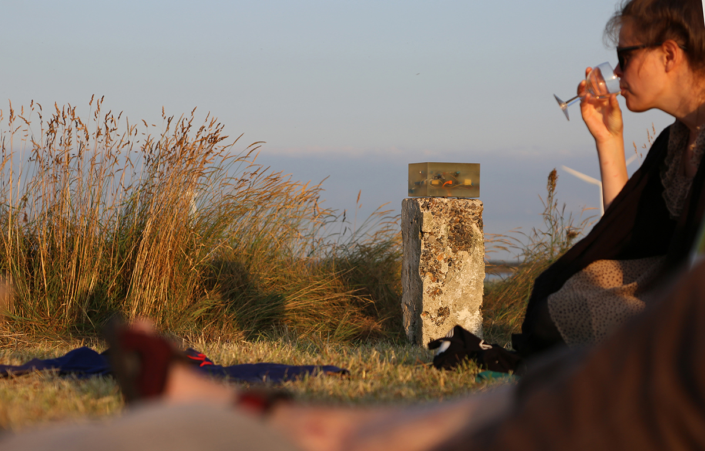
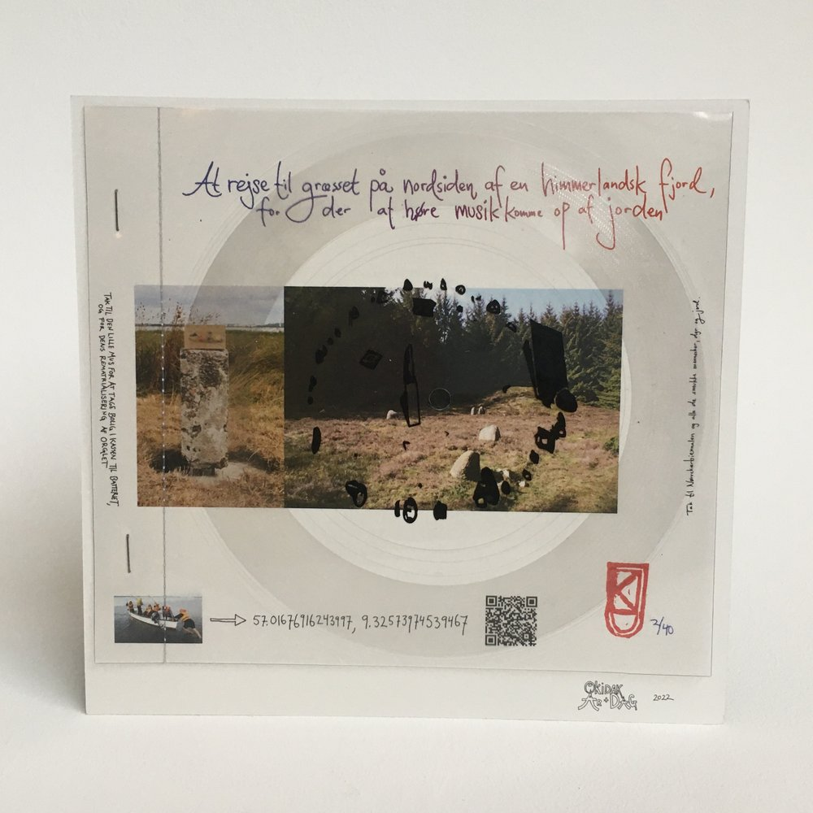

At rejse til græsset på nordsiden af en himmerlandsk fjord for der at høre musik komme op af jorden · 2019

På en strandeng nær det gamle udskibningssted og den tidligere kro, ved Bejstrup på nordsiden af Limfjorden, vil man til dette års Nørrekærbiennale, og 79 dage frem, kunne opleve en lydinstallation i form af værket “At rejse til græsset på nordsiden af en himmerlandsk fjord, for der at høre musik komme op af jorden”.
Kompositioner for 11 orgelpiber af komponisten og lydkunsteren Anders Lauge Meldgaard, vil blive fremført af et soldrevet specialbygget pibeorgel installeret under jorden. Kompositionerne udfolder sig i en cyklus på 3 gange 28 dage, hver dag fra solopgang til solnedgang, i forskudte tidsintervaller kan nye stykker høres. En minicomputer støbt ind i epoxy registerer solens lys, denne data påvirker udviklingen af kompositionerne. Orgelets visuelle fysik, bliver skabt i samarbjede med billedkunstner Kasper Lynge Jensen. Omarrangerede og modificerede materialer, de fleste fundet langs Limfjordens bredder, skaber sigtelinjer og forbindelser hen over fjorden tilbage til LAND, videre ud i fremtiden, og til Søhøje i den nærtliggende Tingskov hvor et af oldtidens tingsted og en evighedssolkalender ligger gemt.
Med til installationen hører et serigrafitrykt oversigtskort med beskrivelse af LAND, Søhøje og lydværket.
Biennalen finder sted 6. til 10. august 2019. Lydinstallationen vil være at finde fra 6. august til 28. oktober 2019. 
http://norrekaerbiennalen.dk/
GPS koordinater for installationen : 57.016736, 9.325684
En optagelse af orgelet er udgivet på 7" flexidisc via År & Dag i et oplag på 40 eks.